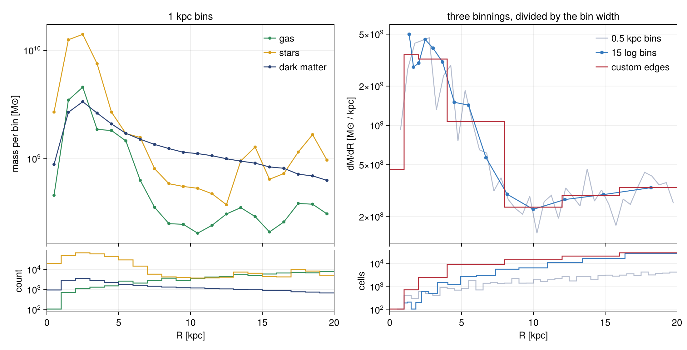
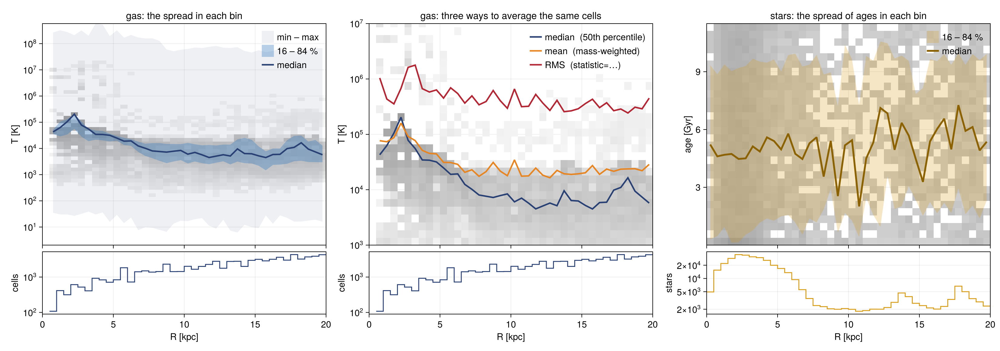
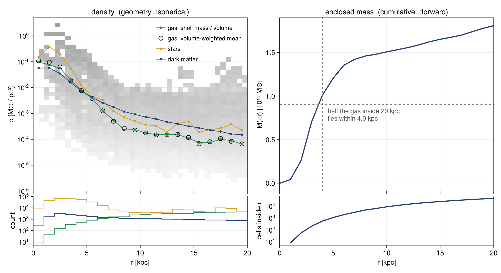
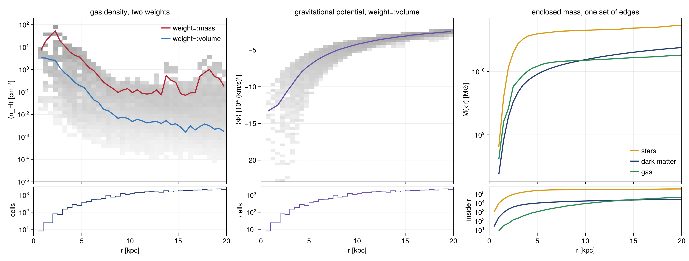
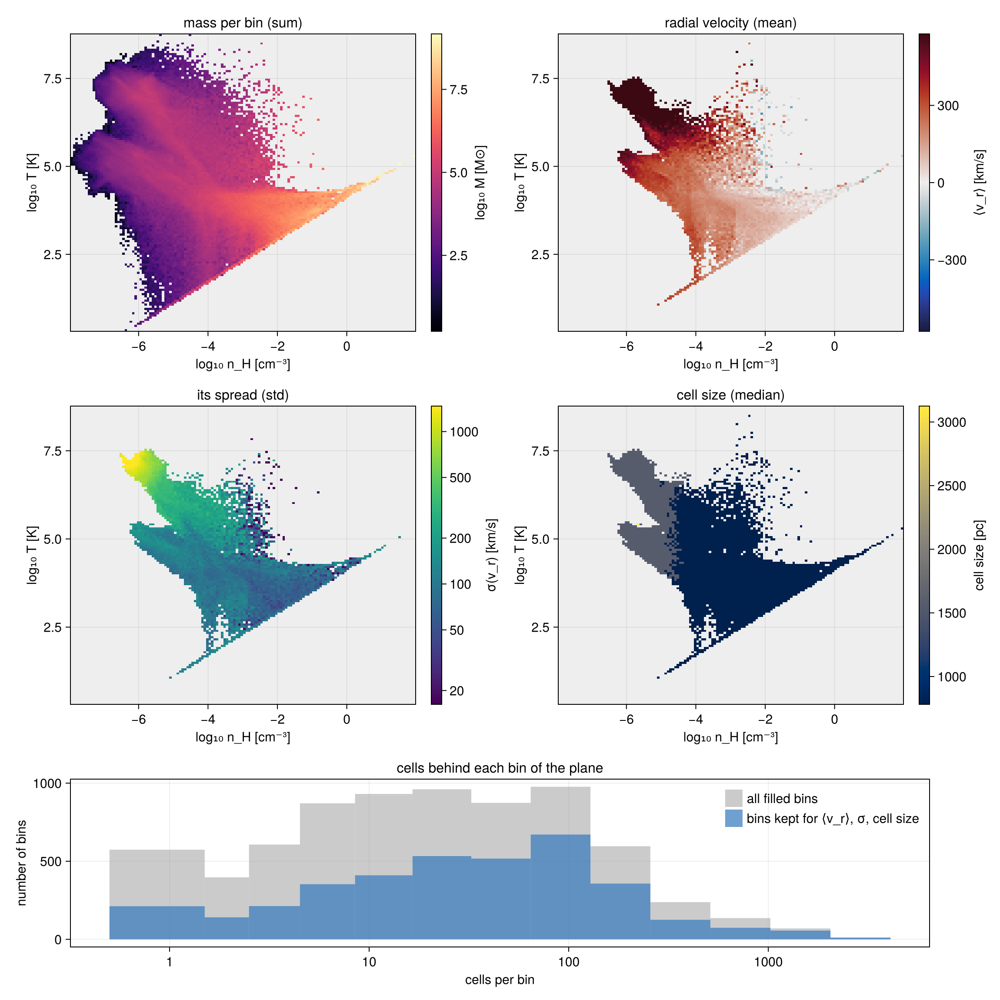
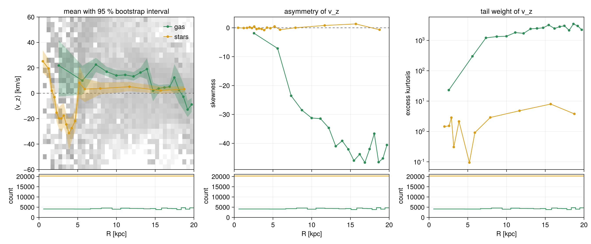

Profiles and phase diagrams
This page is also an executable Jupyter notebook: open / download 15_multi_Profiles_Phase.ipynb. The notebooks run end-to-end and double as part of Mera's test suite.
A profile sorts cells into bins and reports, for every bin, the total weight (for example the mass) and statistics of a second quantity. Mera makes profiles in one, two and three dimensions:
| function | bins by | example | works on |
|---|---|---|---|
profile | one quantity (1-D) | temperature against radius | gas, gravity, RT, particles, projected maps |
phase | two quantities (2-D) | gas mass in the density–temperature plane | gas, gravity, RT, particles, projected maps |
profile3d | three quantities (3-D) | gas mass by density, temperature and height | gas, gravity, RT, particles |
profiletimeseries | one quantity, over many snapshots | how a radial profile changes in time | gas, gravity, RT, particles |
Any quantity can be used. The bin quantity, the quantity reduced per bin, and the weight can each be anything getvar knows: stored fields such as :rho or :vx, and derived quantities such as :T, :mach, :r_sphere, :vr_cylinder, :cellsize, :epot or :mass. On a projected map, the quantities are its maps (:sd, :vlos, …), the image-plane radius :r and the coordinates :x, :y.
This page uses one galaxy and adds one feature at a time:
| section | what it shows |
|---|---|
| 1 | choosing the bins |
| 2 | statistics per bin, and your own |
| 3 | density and enclosed mass |
| 4 | weighting, a gravity profile, and gas, stars and dark matter on shared bins |
| 5 | phase diagrams |
| 6 | distribution shape and error bars on the mean |
| More features | several quantities at once, velocities, projected maps, 3-D, time series |
Setup
Load gas, gravity and particles from one snapshot, so every number on the page is about the same matter at the same time. center is the origin of every radius below; it takes any length unit. getparticlemask picks the stars and the dark matter, so that every gas profile below can be compared with the same profile of the particles, wherever the quantity exists for them.
The last lines set one plot style for the whole page. Every radial plot runs from 0 to Rmax = 20 kpc and has a thin panel below it with the number of cells or particles in each bin. Behind a profile of a quantity that every cell has (temperature, density, velocity, …), grey shading shows the cells themselves: their mass in the radius–quantity plane, made with phase. The profile is a summary of this cloud.
# Example-data root. Point this at your own simulation folder, or set the
# MERA_EXAMPLES environment variable; every path below is built from it.
MERA_EXAMPLES = get(ENV, "MERA_EXAMPLES", "/Volumes/FASTStorage/Simulations/Mera-Tests");
using Mera, CairoMakie, Statistics # Statistics: quantile, used in §2 and §5
CairoMakie.activate!()
BASE = MERA_EXAMPLES # <-- change me
info = getinfo(100, joinpath(BASE,"RAMSES/spiral_clumps"), verbose=false)
gas = gethydro(info, verbose=false, show_progress=false)
grav = getgravity(info, lmax=gas.lmax, verbose=false, show_progress=false)
parts = getparticles(info, verbose=false, show_progress=false) # SAME snapshot as the gas
ctr = [:bc] # box centre; [50.,50.,50.] with range_unit=:kpc is the same point
# One true/false per particle: `mask=mstars` restricts any profile to the stars, `mask=mdm` to the dark matter.
mstars = getparticlemask(parts, :stars; verbose=false)
mdm = getparticlemask(parts, :dm; verbose=false)
println("gas cells = ", length(gas.data), " stars = ", count(mstars), " dark matter = ", count(mdm))
# Plot style for the whole page (figure code only, no Mera concepts).
update_theme!(fontsize=15, Lines=(linewidth=2.5,), Legend=(framevisible=false,),
Axis=(titlefont=:regular, titlesize=16, xgridcolor=(:black,0.07), ygridcolor=(:black,0.07)))
C = (blue=RGBf(0.20,0.47,0.74), navy=RGBf(0.16,0.25,0.45), orange=RGBf(0.90,0.52,0.13),
red=RGBf(0.70,0.15,0.20), green=RGBf(0.18,0.55,0.34), gold=RGBf(0.85,0.62,0.10),
purple=RGBf(0.42,0.32,0.66))
# Log-axis ticks at whole powers of ten; on a range shorter than two decades, also at 2× and 5×.
function decades(lo, hi)
t = 10.0 .^ (ceil(Int, log10(lo)):floor(Int, log10(hi)))
length(t) >= 2 && return t
return [m * 10.0^e for e in floor(Int, log10(lo)):ceil(Int, log10(hi)) for m in (1, 2, 5) if lo <= m * 10.0^e <= hi]
end
function pow10(vs) # labels 10ⁿ and 2×10ⁿ
map(vs) do v
e = floor(Int, log10(v) + 1e-9); m = round(Int, v / 10.0^e)
m == 1 ? rich("10", superscript(string(e))) : rich("$(m)×10", superscript(string(e)))
end
end
logy = (yscale=log10, yticks=decades, ytickformat=pow10) # splat into Axis for a log y axis
Rmax = 20 # radial plots run from 0 to Rmax kpc
rax = (limits=((0, Rmax), nothing), xticks=0:5:Rmax) # splat into Axis for a radius axis
# A thin panel docked under a profile: how many cells or particles fall in each bin. Few counts
# mean a noisy bin; an empty bin leaves a gap. `top` is the profile axis above it.
function countaxis(fig, row, col, top; ylabel="cells", xlabel="R [kpc]", log=true)
yax = log ? logy : (limits=((0, Rmax), (0, nothing)), ytickformat=v -> string.(round.(Int, v)))
ac = Axis(fig[row+1, col]; merge(rax, yax)..., xlabel=xlabel, ylabel=ylabel)
linkxaxes!(top, ac)
hidexdecorations!(top; grid=false, ticks=false) # the x axis labels move to the panel below
return ac
end
# counts per bin as steps over the bin edges; zero becomes a gap, which a log axis needs
countsteps!(ac, edges, n; kw...) = stairs!(ac, edges, replace(Float64.(vcat(n, n[end])), 0.0 => NaN); step=:post, kw...)
squeeze!(fig) = (rowsize!(fig.layout, 2, Relative(0.22)); rowgap!(fig.layout, 1, 6)) # count row: thin, close
# The cells (or particles) behind a profile: their summed weight in the radius–quantity plane, as
# grey shading under the profile lines. Darker means more mass; bins below 10⁻⁴ of the darkest
# stay blank. `yfac` rescales the quantity to the axis unit (e.g. 1e-4 for 10⁴ (km/s)²).
function cloud!(ax, obj, xvar, yvar; weight=:mass, yunit=:standard, yscale=:linear, yrange=nothing,
yfac=1, mask=[false], nbins=(40,60))
c = phase(obj, xvar, yvar; weight=weight, xunit=:kpc, yunit=yunit, xrange=(0,Rmax), yrange=yrange,
yscale=yscale, nbins=nbins, mask=mask, center=ctr, range_unit=:kpc)
H = log10.(c.H); H[.!isfinite.(H)] .= NaN
top = maximum(filter(isfinite, H))
heatmap!(ax, c.xedges, c.yedges .* yfac, H; colormap=cgrad([RGBf(0.96,0.96,0.96), RGBf(0.62,0.62,0.62)]),
colorrange=(top-4, top), lowclip=:transparent)
end;*__ __ _______ ______ _______
| |_| | | _ | | _ |
| | ___| | || | |_| |
| | |___| |_||_| |
| | ___| __ | |
| ||_|| | |___| | | | _ |
|_| |_|_______|___| |_|__| |__|
Mera v1.8.0 | Julia 1.12.7 | 8 threads
gas cells = 590311 stars = 413589 dark matter = 396111. Choosing the bins
With only a bin quantity, profile returns the summed weight per bin; with weight=:mass, that is the mass per bin. Radii are measured from center. There are four ways to set the bins:
| keyword | bins |
|---|---|
nbins=40 | 40 bins of equal width over xrange |
binsize=1.0, binsize=(500,:pc) | a fixed width, in xunit or in its own unit |
scale=:log | log-spaced (base 10); with binsize, the width is in dex |
edges=[0,1,2,4,8] | your own bin boundaries |
binsize and edges override nbins. The result holds x (bin centres), edges, count, sum (summed weight) and sumw2.
The left panel adds the stars and the dark matter, on the same 1 kpc bins: one mask= each. Mass per bin grows with the bin width, so profiles with different bins only agree after dividing by the width. The right panel does this: three binnings, one curve.
Bins and cells. The thin panel under each profile shows how many cells (or particles) each bin holds. A bin with few counts gives a noisy value; an empty bin leaves a gap. A cell counts in the one bin that holds its centre. Bins much narrower than the cells therefore hold few cells, or none, and the profile becomes jagged. The cells of this run are 0.8 to 3 kpc wide, which is why the 0.5 kpc curve jumps and its innermost bin is empty.
# Four binnings of the same gas, out to Rmax = 20 kpc.
kwr = (weight=:mass, center=ctr, range_unit=:kpc, xunit=:kpc)
pl = profile(gas, :r_cylinder; binsize=1.0, xrange=(0,Rmax), kwr...) # 1 kpc wide
pbs = profile(gas, :r_cylinder; binsize=(500,:pc), xrange=(0,Rmax), kwr...) # width in its own unit
plg = profile(gas, :r_cylinder; nbins=15, scale=:log, xrange=(1,Rmax), kwr...) # a log axis cannot start at 0
pcu = profile(gas, :r_cylinder; edges=[0.,1,2,4,8,12,16,20], kwr...)
println("binsize=(500,:pc): ", length(pbs.edges)-1, " bins of ", round(diff(pbs.edges)[1], digits=3), " kpc")
# The same 1 kpc bins for the particles: `mask=` keeps only the stars, or only the dark matter.
pls = profile(parts, :r_cylinder; binsize=1.0, xrange=(0,Rmax), mask=mstars, kwr...)
pld = profile(parts, :r_cylinder; binsize=1.0, xrange=(0,Rmax), mask=mdm, kwr...)
M(p) = p.sum .* info.scale.Msol # mass per bin [Msol]
dMdR(p) = M(p) ./ diff(p.edges) # mass per kpc of radius, independent of the bin width
# ── figure code from here ──
fig = Figure(size=(1100,560))
ax1 = Axis(fig[1,1]; rax..., logy..., ylabel="mass per bin [M⊙]", title="1 kpc bins")
c1 = countaxis(fig, 1, 1, ax1; ylabel="count")
for (p, col, lab) in ((pl, C.green, "gas"), (pls, C.gold, "stars"), (pld, C.navy, "dark matter"))
o = M(p) .> 0 # an empty bin has no place on a log axis
scatterlines!(ax1, p.x[o], M(p)[o], color=col, markersize=7, label=lab)
countsteps!(c1, p.edges, p.count, color=col) # cells for gas, particles otherwise
end
axislegend(ax1, position=:rt)
ax2 = Axis(fig[1,2]; rax..., logy..., ylabel="dM/dR [M⊙ / kpc]", title="three binnings, divided by the bin width")
o = dMdR(pbs) .> 0
lines!(ax2, pbs.x[o], dMdR(pbs)[o], color=(C.navy,0.35), linewidth=1.5, label="0.5 kpc bins")
o = dMdR(plg) .> 1e-3 * maximum(dMdR(plg)) # the first log bin holds cells but almost no mass
scatterlines!(ax2, plg.x[o], dMdR(plg)[o], color=C.blue, markersize=8, label="15 log bins")
stairs!(ax2, pcu.edges, vcat(dMdR(pcu), dMdR(pcu)[end]), step=:post, color=C.red, label="custom edges")
axislegend(ax2, position=:rt)
c2 = countaxis(fig, 1, 2, ax2)
countsteps!(c2, pbs.edges, pbs.count, color=(C.navy,0.35), linewidth=1.5)
countsteps!(c2, plg.edges, plg.count, color=C.blue)
countsteps!(c2, pcu.edges, pcu.count, color=C.red)
squeeze!(fig)
figbinsize=(500,:pc): 40 bins of 0.5 kpc
2. Statistics per bin
Give a second quantity, and every bin reports statistics of it, weighted by weight:
| field | what it is |
|---|---|
mean | the weighted mean |
median, quantiles | the median, and the percentiles asked for in quantiles |
std | the weighted standard deviation |
sem | the standard error of the mean, std/√neff (Kish's effective sample size) |
min, max | the extremes in the bin |
skewness, kurtosis | the shape of the distribution (section 6) |
count, sum, sumw2 | number of cells, summed weight, summed squared weight |
custom | what your own statistic returned |
std and sem answer different questions. std is how much the gas in a bin varies; it does not shrink with more cells. sem is how well the mean is known; it does shrink. Use sem for error bars on a mean (section 6 shows a more robust way), and std or quantiles to describe the gas.
Your own statistic
statistic=f is called once per bin, and its results land in custom. A function of two arguments, f(y, w), gets the bin's values y and weights w. A function of one argument, f(y), gets only the values, so the weights are ignored. The figure uses the mass-weighted root mean square:
statistic = (y, w) -> sqrt(sum(w .* y.^2) / sum(w))More examples, with their result for the bin at R = 10 kpc:
statistic = y -> count(>(1e6), y) # cells hotter than 1e6 K -> 912
statistic = (y, w) -> sum(w[y .> 1e6]) / sum(w) # mass fraction above 1e6 K -> 0.0031
statistic = (y, w) -> exp(sum(w .* log.(y)) / sum(w)) # geometric mean -> 6222 K
statistic = y -> quantile(y, 0.75) - quantile(y, 0.25) # interquartile range -> 1.1e7 KThe first and last count cells, not mass, because they take one argument. This is why the interquartile range is so large: 45 % of the cells in this bin are hotter than 10⁶ K, but they hold only 0.3 % of its mass.
Reading the figure. Left: the median, the 16 to 84 % band and the min to max envelope. The band is narrow, while the envelope spans about seven decades: this is the multiphase gas. Right: three averages of the same cells. At R = 10 kpc the median is 6.0 × 10³ K, the mean 3.5 × 10⁴ K and the RMS 6.6 × 10⁵ K. Median < mean < RMS is the mark of a skewed distribution: a little very hot gas sets the mean, while most of the gas is cool. ±std is not drawn; here it is larger than the mean, so mean − std would be negative. The grey shading is the gas mass behind both panels.
Stars. Stars have no temperature, but each one has an age with a spread in every bin, so the third panel makes the same profile of :age for the stars (mask=mstars). The mass-weighted median age is about 5 Gyr at every radius, and the 16 to 84 % range spans roughly 1 to 9 Gyr: old and young stars are mixed everywhere. The weight matters here too: 63 % of the star particles are younger than 100 Myr, yet they hold less than 16 % of the stellar mass in every bin.
# One set of binning options, reused for both calls so the two profiles share identical bins.
# `weight=:mass` makes every statistic mass-weighted; `unit=:K` asks for the temperature in kelvin;
# `xunit=:kpc` and `range_unit=:kpc` say the radii are kpc; `center=ctr` is the box centre.
common = (weight=:mass, unit=:K, nbins=40, xrange=(0,Rmax), center=ctr, range_unit=:kpc, xunit=:kpc)
# Profile 1: the built-in statistics. `quantiles=` asks for three percentiles per bin, which come
# back as a matrix with one column per level, in the order requested.
pT = profile(gas, :r_cylinder, :T; common..., quantiles=[0.16, 0.5, 0.84])
# Profile 2: the same bins, but with our own reduction. Mera calls this once per bin with that
# bin's temperatures `y` and masses `w`, and stores the result in `pC.custom`.
pC = profile(gas, :r_cylinder, :T; common...,
statistic=(y,w) -> sqrt(sum(w .* y.^2) / sum(w))) # mass-weighted RMS
# Empty bins come back as NaN, and a zero minimum cannot be drawn on a log axis, so keep the bins
# that actually hold gas. Every array below is filtered by the same mask, so they stay aligned.
ok = (pT.count .> 0) .& (pT.min .> 0)
x = pT.x[ok] # bin centres, kpc
mn = pT.min[ok]; mx = pT.max[ok] # the extremes present in each bin
q16 = pT.quantiles[ok,1] # column 1 = the 0.16 level we asked for
q50 = pT.quantiles[ok,2] # column 2 = 0.50, the median
q84 = pT.quantiles[ok,3] # column 3 = 0.84
mu = pT.mean[ok] # mass-weighted mean
sem = pT.sem[ok] # uncertainty ON THE MEAN, not the spread of the gas
rms = pC.custom[ok] # whatever `statistic` returned, here the RMS
# Stars have no temperature, but every star has an age, with a spread in each bin just like T.
# Same bins, same statistics, restricted to the stars with `mask=`.
pA = profile(parts, :r_cylinder, :age; weight=:mass, unit=:Gyr, nbins=40, xrange=(0,Rmax),
center=ctr, range_unit=:kpc, xunit=:kpc, mask=mstars, quantiles=[0.16, 0.5, 0.84])
oa = pA.count .> 0
# ── figure code from here ──
fig = Figure(size=(1650,580))
ax1 = Axis(fig[1,1]; rax..., logy..., ylabel="T [K]", title="gas: the spread in each bin")
cloud!(ax1, gas, :r_cylinder, :T; yunit=:K, yscale=:log) # every cell, shaded by mass
band!(ax1, x, mn, mx, color=(C.navy,0.08), label="min – max")
band!(ax1, x, q16, q84, color=(C.blue,0.35), label="16 – 84 %")
lines!(ax1, x, q50, color=C.navy, label="median")
axislegend(ax1, position=:rt)
countsteps!(countaxis(fig, 1, 1, ax1), pT.edges, pT.count, color=C.navy)
ax2 = Axis(fig[1,2]; rax..., logy..., ylabel="T [K]", title="gas: three ways to average the same cells")
cloud!(ax2, gas, :r_cylinder, :T; yunit=:K, yscale=:log)
lines!(ax2, x, q50, color=C.navy, linewidth=2.5, label="median (50th percentile)")
lines!(ax2, x, mu, color=C.orange, label="mean (mass-weighted)")
lines!(ax2, x, rms, color=C.red, linewidth=2.5, label="RMS (statistic=…)")
# sem whiskers belong on the mean. Every third bin, and only where the lower whisker stays positive,
# because a log axis cannot draw down to zero.
se = [i for i in 1:3:length(x) if mu[i]-sem[i] > 0]
errorbars!(ax2, x[se], mu[se], sem[se], color=C.orange, whiskerwidth=7)
ylims!(ax2, 1e3, 1e7) # zoom on the averages; the full cloud is in the left panel
axislegend(ax2, position=:rt)
countsteps!(countaxis(fig, 1, 2, ax2), pT.edges, pT.count, color=C.navy)
ax3 = Axis(fig[1,3]; rax..., ylabel="age [Gyr]", title="stars: the spread of ages in each bin")
cloud!(ax3, parts, :r_cylinder, :age; yunit=:Gyr, mask=mstars, nbins=(40,30))
band!(ax3, pA.x[oa], pA.quantiles[oa,1], pA.quantiles[oa,3], color=(C.gold,0.25), label="16 – 84 %")
lines!(ax3, pA.x[oa], pA.median[oa], color=RGBf(0.55,0.38,0.0), linewidth=3, label="median")
axislegend(ax3, position=:rt)
countsteps!(countaxis(fig, 1, 3, ax3; ylabel="stars"), pA.edges, pA.count, color=C.gold)
squeeze!(fig)
fig
3. Density and enclosed mass
geometry=:sphericaldivides each bin's summed weight by its shell volume,4/3·π·(r₂³ − r₁³), and returns it asdensity, in weight unit perxunit³.geometry=:cylindricaldivides by the annulus area,π·(r₂² − r₁²), which gives a surface density perxunit².cumulative=:forward(or:reverse) addscumsumandcumcount. Withweight=:mass,cumsumis the enclosed mass M(<r), from which the half-mass radius follows.normalize=:sumaddsfraction(summing to 1), andnormalize=:pdfa probability density (integrating to 1). For distributions of a single quantity,pdfis the direct route; the Statistics page covers it.
What this density is. With weight=:mass, density is the mass in a shell divided by the volume of the shell: the mean density of the shell. It is not a median, and not a mass-weighted mean. It matches the volume-weighted mean of the cell densities (section 4), which the left panel shows as open circles. The stars and the dark matter use the same call with mask=; their density is the particle mass in a shell divided by its volume. The grey shading is the gas cells: the shell density is a summary of a spread of more than five decades. The two differ slightly where the cells of a shell do not fill it exactly, because a cell counts in the shell that holds its centre. The shells here are 1 kpc wide, no narrower than the smallest cells. Section 4 compares the enclosed mass of the gas, the stars and the dark matter.
ed3 = collect(0:1.0:Rmax) # 1 kpc shells
pr = profile(gas, :r_sphere; weight=:mass, geometry=:spherical, cumulative=:forward,
edges=ed3, center=ctr, range_unit=:kpc, xunit=:kpc)
ρ = pr.density .* gas.scale.Msol ./ 1e9 # shell mass / shell volume, Msol/kpc^3 -> Msol/pc^3
Menc = pr.cumsum .* gas.scale.Msol # Msol inside each bin's outer edge
rhalf = pr.edges[1 + findfirst(>=(0.5), Menc ./ Menc[end])] # half the gas inside Rmax is within rhalf
# The same shells for the stars and the dark matter: their mass per shell volume.
ρs = profile(parts, :r_sphere; weight=:mass, geometry=:spherical, mask=mstars,
edges=ed3, center=ctr, range_unit=:kpc, xunit=:kpc)
ρd = profile(parts, :r_sphere; weight=:mass, geometry=:spherical, mask=mdm,
edges=ed3, center=ctr, range_unit=:kpc, xunit=:kpc)
ρpc3(p) = p.density .* info.scale.Msol ./ 1e9 # Msol/kpc^3 -> Msol/pc^3
# For comparison: the volume-weighted mean of the cell densities, on the same shells.
pv = profile(gas, :r_sphere, :rho; weight=:volume, unit=:Msol_pc3,
edges=ed3, center=ctr, range_unit=:kpc, xunit=:kpc)
# ── figure code from here ──
fig = Figure(size=(1100,600))
a1 = Axis(fig[1,1]; rax..., logy..., ylabel="ρ [M⊙ / pc³]", title="density (geometry=:spherical)")
cloud!(a1, gas, :r_sphere, :rho; yunit=:Msol_pc3, yscale=:log) # the gas cells, shaded by mass
od = ρ .> 0
scatterlines!(a1, pr.x[od], ρ[od], color=C.green, markersize=8, label="gas: shell mass / volume")
ov = pv.mean .> 0
scatter!(a1, pv.x[ov], pv.mean[ov], color=:transparent, strokecolor=:black, strokewidth=1.2,
markersize=13, label="gas: volume-weighted mean")
for (p, col, lab) in ((ρs, C.gold, "stars"), (ρd, C.navy, "dark matter"))
o = ρpc3(p) .> 0
scatterlines!(a1, p.x[o], ρpc3(p)[o], color=col, markersize=7, label=lab)
end
ylims!(a1, 1e-6, 5) # the thinnest gas cells reach further down
axislegend(a1, position=:rt, labelsize=13)
c1 = countaxis(fig, 1, 1, a1; ylabel="count", xlabel="r [kpc]")
for (p, col) in ((pr, C.green), (ρs, C.gold), (ρd, C.navy)); countsteps!(c1, p.edges, p.count, color=col); end
a2 = Axis(fig[1,2]; rax..., ylabel="M(<r) [10¹⁰ M⊙]", title="enclosed mass (cumulative=:forward)")
lines!(a2, pr.edges, vcat(0, Menc) ./ 1e10, color=C.navy)
hlines!(a2, [0.5*Menc[end]/1e10], color=:gray50, linestyle=:dash, linewidth=1.5)
vlines!(a2, [rhalf], color=:gray50, linestyle=:dash, linewidth=1.5)
text!(a2, rhalf + 0.5, 0.5*Menc[end]/1e10; text="half the gas inside $(Rmax) kpc\nlies within $(round(rhalf, digits=1)) kpc",
color=:gray35, fontsize=14, align=(:left,:top), offset=(0,-6))
# the enclosed mass at r uses every cell inside r: `cumcount`, not the count per shell
lines!(countaxis(fig, 1, 2, a2; ylabel="cells inside r", xlabel="r [kpc]"), pr.edges[2:end], pr.cumcount, color=C.navy)
squeeze!(fig)
fig
4. Weighting, gravity, and components
weight decides how much each cell counts in its bin. On an AMR grid this changes the answer, because a refined region packs many small cells into little space.
weight | each cell counts in proportion to | the mean follows |
|---|---|---|
:mass | its mass | the material |
:volume | the space it fills (grid data only) | the volume |
:none | nothing, every cell counts once | the refinement |
any quantity, e.g. :T | that quantity | your choice |
Dense gas fills little space but holds most of the mass. Wherever a bin mixes clumps with thin gas, the mass-weighted mean density therefore lies far above the volume-weighted one (left panel). The grey shading shows why: in every bin, the cells span several decades in density. The gap itself is information: the bin is not uniform. Always state which weight you used.
Gravity and RT data have no mass, so use weight=:volume there. The middle panel profiles the gravitational potential this way, in (km/s)². Its zero point is arbitrary, so read its shape and its differences between radii, not single values (see How Quantities Are Computed).
Components need shared bins. Pass the same edges= vector to every call, and all curves land on the same radii, so they can be added, divided or compared. With a mask= from getparticlemask, one snapshot gives gas, stars and dark matter on one axis (right panel).
# Shared bins: 41 boundaries make 40 bins of 0.5 kpc. Every call below gets the same vector, so
# a difference between two curves can only come from the weight or the component.
ed = collect(range(0, Rmax, length=41))
common = (edges=ed, center=ctr, range_unit=:kpc, xunit=:kpc)
# The same quantity, two weights. `unit=:nH` reports the density as hydrogen atoms per cm^3.
pmw = profile(gas, :r_sphere, :rho; weight=:mass, unit=:nH, common...) # follows the material
pvw = profile(gas, :r_sphere, :rho; weight=:volume, unit=:nH, common...) # follows the space
# Gravity has no mass column, so weight by volume. `unit=:km2_s2` gives the potential in (km/s)^2.
pep = profile(grav, :r_sphere, :epot; weight=:volume, unit=:km2_s2, common...)
# Components on the same bins, with the masks from the setup. With no second quantity, `sum` is
# the mass per bin, and `cumulative=:forward` adds it up from the centre: the enclosed mass.
cg = profile(gas, :r_sphere; weight=:mass, cumulative=:forward, common...)
cs = profile(parts, :r_sphere; weight=:mass, cumulative=:forward, mask=mstars, common...)
cd = profile(parts, :r_sphere; weight=:mass, cumulative=:forward, mask=mdm, common...)
Mg, Ms, Md = cg.cumsum .* gas.scale.Msol, cs.cumsum .* parts.scale.Msol, cd.cumsum .* parts.scale.Msol
# ── figure code from here ──
fig = Figure(size=(1500,570))
ax1 = Axis(fig[1,1]; rax..., logy..., ylabel="⟨n_H⟩ [cm⁻³]", title="gas density, two weights")
cloud!(ax1, gas, :r_sphere, :rho; yunit=:nH, yscale=:log) # the gas cells, shaded by mass
o1 = pmw.mean .> 0; o2 = pvw.mean .> 0 # empty bins report 0, which a log axis cannot show
lines!(ax1, pmw.x[o1], pmw.mean[o1], color=C.red, label="weight=:mass")
lines!(ax1, pvw.x[o2], pvw.mean[o2], color=C.blue, label="weight=:volume")
ylims!(ax1, 1e-5, 2e2) # the thinnest gas cells reach further down
axislegend(ax1, position=:rt)
countsteps!(countaxis(fig, 1, 1, ax1; xlabel="r [kpc]"), ed, pmw.count, color=C.navy) # the same cells for both weights
ax2 = Axis(fig[1,2]; rax..., ylabel="⟨Φ⟩ [10⁴ (km/s)²]", title="gravitational potential, weight=:volume")
cloud!(ax2, grav, :r_sphere, :epot; weight=:volume, yunit=:km2_s2, yfac=1e-4) # gravity cells, by volume
og = isfinite.(pep.mean)
lines!(ax2, pep.x[og], pep.mean[og] ./ 1e4, color=C.purple)
countsteps!(countaxis(fig, 1, 2, ax2; xlabel="r [kpc]"), ed, pep.count, color=C.purple)
ax3 = Axis(fig[1,3]; rax..., logy..., ylabel="M(<r) [M⊙]", title="enclosed mass, one set of edges")
c3 = countaxis(fig, 1, 3, ax3; ylabel="inside r", xlabel="r [kpc]")
for (Mc, pc, col, lab) in ((Ms, cs, C.gold, "stars"), (Md, cd, C.navy, "dark matter"), (Mg, cg, C.green, "gas"))
ok = Mc .> 1e8 # the innermost bins hold too few particles to show
lines!(ax3, ed[2:end][ok], Mc[ok], color=col, label=lab)
lines!(c3, ed[2:end], replace(Float64.(pc.cumcount), 0.0 => NaN), color=col) # particles or cells inside r
end
axislegend(ax3, position=:rb)
squeeze!(fig)
fig
5. Phase diagrams
phase(obj, x, y) is a 2-D histogram of the summed weight; here, the gas mass in the density–temperature plane. A third quantity colours each bin by a statistic of it, chosen with cstat: :mean (the default), :median, :std, :min, :max, :quantiles, :full (all of them) or your own function. normalize=:pdf gives a 2-D probability density, and xedges, yedges take custom bins. weight_unit=:Msol sums the mass in solar masses; the default is code units.
The four panels share one grid of bins and differ only in what the colour shows:
| panel | statistic | what it answers |
|---|---|---|
| mass | sum of the weight | where the gas is |
| ⟨v_r⟩ | mean radial velocity about the centre | inflow or outflow |
| σ(v_r) | standard deviation of v_r | how ordered that motion is |
| cell size | median | where the run refined; a property of the simulation, not of the gas |
Three habits make such panels readable. Bins with almost no mass get wild means, and one of them can set the colour range of a whole panel, so they are masked first. v_r is mostly outflow here, so the symmetric colour limits come from a percentile of |v_r|, not from its extremes. And σ spans 1.7 dex, so it gets a log colour scale. Velocities are measured in the box frame.
The histogram at the bottom shows how many cells stand behind each bin. A colour from a bin with one or two cells is a single measurement, not an average; a bin with thousands of cells is well determined. The blue bars are the bins kept for the three colour panels. Here several hundred bins hold a single cell, and the bins dropped by the mass cut hold 36 % of the cells but almost no mass: the hot, thin gas fills many cells.
# --- four views of the SAME plane -------------------------------------------------------------
# `phase` is a 2-D weighted histogram: it bins the cells by two fields and sums the weight that
# lands in each bin. Here the plane is density against temperature, the standard way of asking
# which physical states the gas is in.
#
# One shared bundle, so all four panels sit on exactly the same grid of bins and can be compared
# pixel by pixel:
# nbins=(140,140) 140 bins along x, 140 along y
# xscale/yscale :log, base 10, because density and temperature each span many decades
# xunit/yunit the units the two AXES are measured in (n_H in cm⁻³, T in K)
# weight=:mass the quantity summed into each bin, in weight_unit (default: code units)
kw = (weight=:mass, weight_unit=:Msol, nbins=(140,140), xscale=:log, yscale=:log, xunit=:nH, yunit=:K,
center=ctr, range_unit=:kpc)
# Two fields: `H` is the summed weight per bin, so with weight=:mass this is a mass map in Msol.
ph = phase(gas, :rho, :T; kw...)
# A THIRD field adds a per-bin reduction of that field, and `cstat` picks which one. The bins do
# not change; only what the colour shows. Options: :mean (default), :median, :min, :max, :std,
# :quantiles, :full (all of them at once), or a function of your own. `cunit` is that third field's unit,
# which is independent of xunit/yunit.
pvr = phase(gas, :rho, :T, :vr_sphere; cstat=:mean, cunit=:km_s, kw...) # the average motion
psd = phase(gas, :rho, :T, :vr_sphere; cstat=:std, cunit=:km_s, kw...) # the spread of that motion
pcs = phase(gas, :rho, :T, :cellsize; cstat=:median, cunit=:pc, kw...) # the typical cell size
# --- keep the colours honest -------------------------------------------------------------------
# A bin holding almost no mass still reports a mean, but that mean comes from a handful of cells
# and can be enormous. One such bin then sets the colour range and flattens the whole panel into
# a single tone. Drop them first, exactly as the radial profiles drop bins with too few points.
keep = ph.H .>= 1e-6 * sum(ph.H) # keep a bin only if it holds a millionth of the total mass
# NaN is the "nothing here" value for Makie: a NaN pixel is left unpainted rather than drawn as
# zero, which on a diverging colour map would otherwise look like a real measurement of zero.
function mask(M)
out = similar(M, Float64)
@inbounds for i in eachindex(M); out[i] = keep[i] ? M[i] : NaN; end
return out
end
function qq(M, p) # a percentile of the finite entries of a map
v = filter(isfinite, vec(M))
return isempty(v) ? 0.0 : quantile(v, p)
end
# v_r here is one-sided, a wind blowing outwards rather than a balanced in-and-out field, so its
# extremes are a poor guide to the range worth showing. Take a high percentile of |v_r| and apply
# it symmetrically, which keeps zero at the centre of the diverging map so the SIGN stays readable.
vlim = qq(abs.(mask(pvr.mean)), 0.90)
sig = mask(psd.std); sig[sig .<= 0] .= NaN # a log colour scale needs strictly positive values
# How many cells stand behind each bin? The same bins with weight=:none: then `H` counts cells.
nc = phase(gas, :rho, :T; kw..., weight=:none, xedges=ph.xedges, yedges=ph.yedges).H
println("cells in the plane: ", Int(sum(nc)), " filled bins: ", count(nc .> 0),
" cells in the bins kept for the colour panels: ", Int(sum(nc[keep])))
# ── figure code from here ──
# A heatmap wants one coordinate per bin: the midpoints of the 141 edges, in log10 like the axes.
xc = log10.((ph.xedges[1:end-1] .+ ph.xedges[2:end]) ./ 2)
yc = log10.((ph.yedges[1:end-1] .+ ph.yedges[2:end]) ./ 2)
lg(M) = log10.(replace(M, 0.0=>NaN)) # empty bins become blank instead of -Inf
fig = Figure(size=(1150,1150))
# title colour-bar label data colour map range scale
panels = (("mass per bin (sum)", "log₁₀ M [M⊙]", lg(ph.H), :magma, nothing, identity),
("radial velocity (mean)", "⟨v_r⟩ [km/s]", mask(pvr.mean), :balance, (-vlim, vlim), identity),
("its spread (std)", "σ(v_r) [km/s]", sig, :viridis, (qq(sig,0.02), qq(sig,0.995)), log10),
("cell size (median)", "cell size [pc]", mask(pcs.median), :cividis, nothing, identity))
for (k, (title, clabel, M, cm, rng, csc)) in enumerate(panels)
r = (k-1)÷2 + 1; c = 2*((k-1)%2) + 1 # 2×2 layout, each panel followed by its colour bar
ax = Axis(fig[r,c]; xlabel="log₁₀ n_H [cm⁻³]", ylabel="log₁₀ T [K]", title=title,
backgroundcolor=RGBf(0.93,0.93,0.93)) # masked (NaN) bins show as light grey
kwc = rng === nothing ? (; colormap=cm) : (; colormap=cm, colorrange=rng)
hm = heatmap!(ax, xc, yc, M; colorscale=csc, kwc...)
cticks = csc === log10 ? ([20,50,100,200,500,1000,2000], ["20","50","100","200","500","1000","2000"]) : Makie.automatic
Colorbar(fig[r,c+1], hm, label=clabel, ticks=cticks)
end
# Bottom row: a histogram of the cells per bin, for all filled bins and for those kept above.
# Counts are whole numbers, so the classes are 1, 2, 3–4, 5–8, 9–16, …: edges halfway between integers.
he = log10.(vcat(0.5, [2.0^k + 0.5 for k in 0:ceil(Int, log2(maximum(nc)))]))
tk = 0:ceil(Int, log10(maximum(nc)))
axh = Axis(fig[3,1:4]; xlabel="cells per bin", ylabel="number of bins", title="cells behind each bin of the plane",
xticks=(tk, string.(10 .^ tk)))
hist!(axh, log10.(nc[nc .> 0]); bins=he, color=(:gray60,0.5), label="all filled bins")
hist!(axh, log10.(nc[keep]); bins=he, color=(C.blue,0.7), label="bins kept for ⟨v_r⟩, σ, cell size")
axislegend(axh, position=:rt)
rowsize!(fig.layout, 3, Relative(0.22))
fig[Mera] Hint: getvar(:vr_sphere) has no `vcenter` — velocities are in the BOX frame.
Pass vcenter=:auto for an object with bulk motion (`center=` sets the origin,
`vcenter=` the frame).
(shown once per session; verbose(false) silences Mera's messages)
cells in the plane: 590311 filled bins: 7243 cells in the bins kept for the colour panels: 380390
6. Distribution shape and error bars on the mean
A mean alone can mislead, for two reasons. First, the same mean can come from very different gas: in one bin, all the gas moves at about that speed; in another, most of it is at rest and a few cells move very fast. Second, a mean from a limited number of cells is itself uncertain, and a difference between two bins may be noise. This section shows three options that answer both. They are off by default and can be combined.
The shape of each bin: skewness and kurtosis. Every profile with a second quantity returns them.
skewnessmeasures asymmetry. It is 0 for a symmetric distribution. A negative value means a long tail towards low values: here, a few cells with large negativev_z.kurtosis(the excess kurtosis) measures how much of the distribution lies in rare, extreme values. It is 0 for a Gaussian. A large value means a narrow core plus a few outliers.
Bins with equal counts: scale=:equal. It places the edges so that every bin holds about the same number of cells. With fixed widths, bins where the gas is sparse hold few cells and their statistics get noisy; equal-count bins are all measured equally well. The price is that bins are wider where the gas is sparse, so the bin centres are unevenly spaced (the dots in the figure), while the count panels below stay flat.
Error bars on the mean: bootstrap=N. How well is the mean of a bin known? The usual formula, sem = std/√n (section 2), works well when the values are well behaved. When a few extreme cells set the std, as here, it becomes unreliable. The bootstrap works directly with the cells. It draws the cells of a bin at random, with repetition, to build N new samples of the same size, and computes the mean of each. The range that holds the central 95 % of these N means is the confidence interval (confidence_level=0.95). The result gains mean_ci and median_ci (columns: lower, upper end) and median_se. Use it whenever you compare means between radii, regions or simulations, and when bins are small or skewed. If the intervals of two bins overlap, their difference may be noise.
ci sets how the interval is computed: :percentile (default), :basic or :bca (bias-corrected and accelerated). :bca is more accurate for skewed data, but its cost grows with the square of the cells per bin; use it for bins of a few thousand cells or fewer. The random draws are seeded, so a rerun gives the same interval.
Reading the figure. Left: the mean vertical velocity with its 95 % interval. Where the band does not include zero, the net motion is real, not noise. The band shows how well the mean is known, not how much the gas moves: the spread of v_z in each bin (std) is 40 to 80 km/s. Middle and right: the skewness reaches about −45 and the kurtosis several thousand. Most gas has a small v_z, and a few cells move much faster downwards. For such gas, mean ± std is a poor summary; quantiles (section 2) describe it better.
Stars (gold) get the same call with mask=mstars. Their v_z is close to symmetric: the skewness stays between −0.8 and 1.3, the kurtosis below 8. Stars do not feel pressure or shocks, so they have no tail of fast-moving cells. Their equal-count bins crowd into the inner 6 kpc, where most stars are, and each holds about 20,000 particles, so their intervals are narrow.
# Equal-count bins inside the disc, with shape statistics and a bootstrap on every bin.
kb = (weight=:mass, unit=:km_s, scale=:equal, nbins=18, xrange=(0,Rmax), center=ctr, range_unit=:kpc,
xunit=:kpc, bootstrap=800, confidence_level=0.95)
pb = profile(gas, :r_cylinder, :vz; kb...)
pbs = profile(parts, :r_cylinder, :vz; mask=mstars, kb...) # the same for the stars
println("cells per bin (min, max): ", extrema(pb.count), " stars per bin: ", extrema(pbs.count))
# Each result holds: x (bin centres), mean, mean_ci (nbins×2: lower and upper end of the interval),
# skewness (asymmetry, 0 = symmetric) and kurtosis (EXCESS kurtosis, tail weight, 0 = Gaussian).
# ── figure code from here ──
fig = Figure(size=(1350,560))
ax1 = Axis(fig[1,1]; rax..., ylabel="⟨v_z⟩ [km/s]", title="mean with 95 % bootstrap interval")
cloud!(ax1, gas, :r_cylinder, :vz; yunit=:km_s, yrange=(-60,60), nbins=(40,30)) # gas cells near zero
hlines!(ax1, [0.0], color=:gray50, linestyle=:dash, linewidth=1.5)
ax2 = Axis(fig[1,2]; rax..., ylabel="skewness", title="asymmetry of v_z")
hlines!(ax2, [0.0], color=:gray50, linestyle=:dash, linewidth=1.5) # the symmetric case
ax3 = Axis(fig[1,3]; rax..., logy..., ylabel="excess kurtosis", title="tail weight of v_z")
cs = [countaxis(fig, 1, k, ax; ylabel="count", log=false) for (k, ax) in enumerate((ax1, ax2, ax3))]
for (p, col, lab) in ((pb, C.green, "gas"), (pbs, C.gold, "stars"))
band!(ax1, p.x, p.mean_ci[:,1], p.mean_ci[:,2], color=(col,0.30))
scatterlines!(ax1, p.x, p.mean, color=col, markersize=8, label=lab)
scatterlines!(ax2, p.x, p.skewness, color=col, markersize=8)
o = p.kurtosis .> 0 # a log axis shows only positive values
scatterlines!(ax3, p.x[o], p.kurtosis[o], color=col, markersize=8)
for c in cs; countsteps!(c, p.edges, p.count, color=col); end
end
ylims!(ax1, -60, 60)
axislegend(ax1, position=:rt)
squeeze!(fig)
figcells per bin (min, max): (3847, 4754) stars per bin: (20266, 20267)
More features
All of these use the same calls as above.
Several quantities in one pass
Give yvar as a vector. The cells are binned once, which is faster than one call per quantity. The statistics of each quantity are in fields:
p = profile(gas, :r_cylinder, [:T, :rho]; weight=:mass, nbins=40, center=ctr, range_unit=:kpc, xunit=:kpc)
p.fields[:T].meanVelocity profiles
getvar splits each cell's velocity into components about center:
| quantity | component |
|---|---|
:vr_cylinder | radial, in the disc plane (positive outwards) |
:vϕ_cylinder | rotation |
:vz | vertical |
:vr_sphere, :vθ_sphere, :vϕ_sphere | the spherical components |
In a profile of a component, mean is the mean motion ⟨v⟩(R), and std is the velocity dispersion σ(R). σ is measured about the bin's own mean, so rotation does not add to it. Velocities are in the box frame. velocitydispersion returns σR, σϕ, σ_z and the total σ in one call.
pv = profile(gas, :r_cylinder, :vϕ_cylinder; weight=:mass, unit=:km_s, nbins=20, xrange=(0,20),
center=ctr, range_unit=:kpc, xunit=:kpc)
pv.mean, pv.std # rotation curve and dispersionProfiles of projected maps
profile and phase also take a projection result. Pixels are binned by the image-plane radius :r, by :x or :y, or by another map. The weight is :none (every pixel counts once) or another map. This gives, for example, a surface density profile Σ(R). It works for off-axis maps too, such as an edge-on view.
proj = projection(gas, :sd, :Msol_pc2; pxsize=[200., :pc], center=ctr, range_unit=:kpc)
ps = profile(proj, :sd; xvar=:r, xunit=:kpc, xrange=(0,20), nbins=20) # Σ(R)A profile of a map differs from a profile of the gas: each pixel holds the whole line of sight. For example, :σlos is the velocity spread along each line of sight, while std of a 3-D profile is the spread over a whole ring:
edge = projection(gas, [:sd, :σlos], [:Msol_pc2, :km_s]; direction=:edgeon, pxsize=[200., :pc],
center=ctr, range_unit=:kpc)
profile(edge, :σlos; xvar=:r, weight=:sd, xunit=:kpc, xrange=(0,20), nbins=20)Selecting particles
getparticlemask(parts, :stars) returns one true or false per particle; pass it as mask= to any call. It takes a family name (:stars, :dm, :clouds, …), a family number, or (family=…, tag=…).
Three quantities: profile3d
H holds the summed weight in each 3-D bin. Summing over one axis, sum(p3.H; dims=3), gives the phase diagram of the other two.
p3 = profile3d(gas, :rho, :T, :z; weight=:mass, weight_unit=:Msol, nbins=(80,80,24),
xscale=:log, yscale=:log, yunit=:K, zunit=:kpc, center=ctr, range_unit=:kpc)Many snapshots: profiletimeseries
profiletimeseries computes the same profile for every output and stacks the results into a matrix with one column per snapshot. Fixed edges keep the bins the same in every snapshot.
load(out) = gethydro(getinfo(out, path, verbose=false), verbose=false)
ts = profiletimeseries(load, [50, 75, 100], :r_cylinder, :T; weight=:mass, unit=:K,
edges=collect(0:1.0:20), center=ctr, range_unit=:kpc, xunit=:kpc)
ts.M, ts.t # nbins × snapshots, and the time of each snapshotSummary
| task | call |
|---|---|
| bin a quantity: width, log, custom edges | profile(obj, x; nbins, binsize, scale, edges) |
| statistics per bin, or your own | profile(obj, x, y; statistic=…) |
| density, enclosed mass, fraction, pdf | geometry, cumulative, normalize |
| mass, volume, none or any quantity as weight | weight=… |
| gas, stars and dark matter on shared bins | edges=…, mask=getparticlemask(…) |
| 2-D phase diagram, coloured by a statistic | phase(obj, x, y[, c]; cstat) |
| distribution shape, equal-count bins, error bars | skewness, kurtosis, scale=:equal, bootstrap=N |
| several quantities in one pass | profile(obj, x, [y1, y2]), then fields |
| velocity profiles and dispersions | profile(obj, :r_cylinder, :vϕ_cylinder), velocitydispersion |
| profile or phase diagram of a projected map | profile(map, var; xvar=:r), phase(map, x, y) |
| 3-D histogram | profile3d |
| a profile over time | profiletimeseries |
The result's source field says whether a profile came from data (:data) or from a map (:map). For distributions along the line of sight (spectra, velocity cubes), see the Off-axis Projection page.